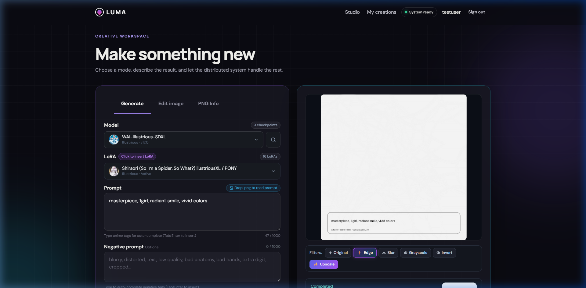
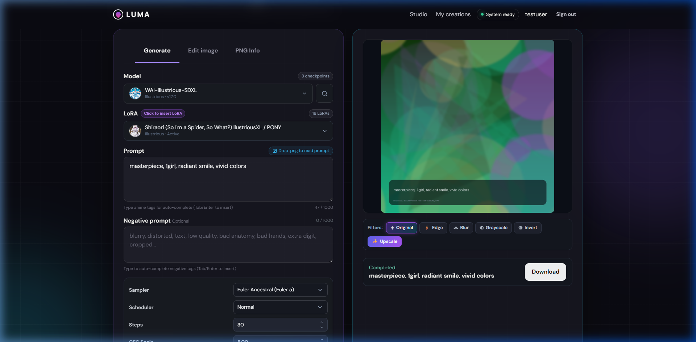
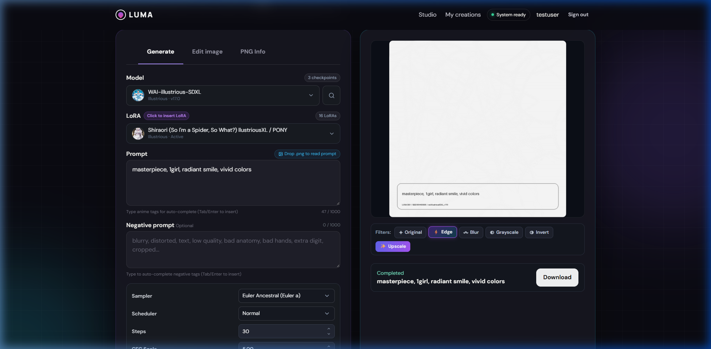
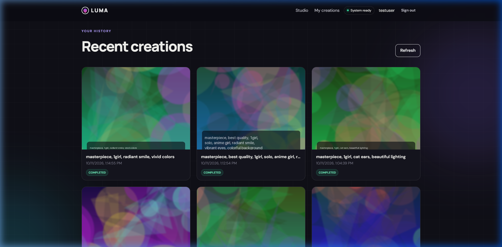
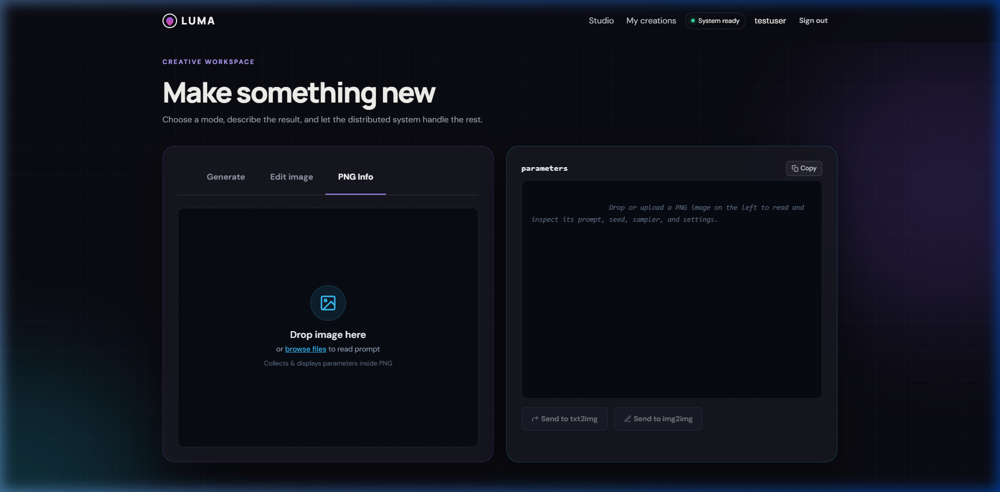
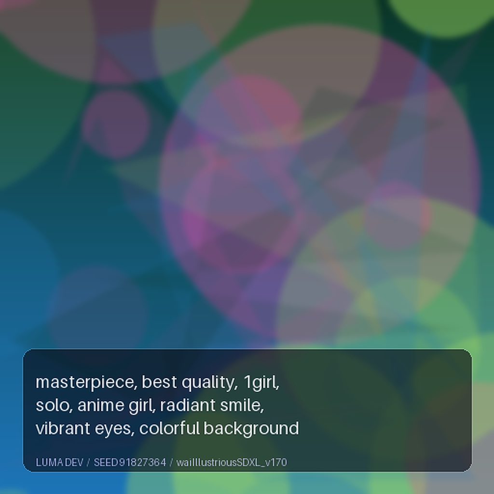

เจาะลึกโค้ดแยกตามหน้าที่ ทุกไฟล์ ทุกฟังก์ชันใน Project LUMA
หน้านี้ถูกสร้างขึ้นเพื่อตอบโจทย์ผู้ที่ต้องการเข้าใจระบบแบบทะลุปรุโปร่ง โดยอธิบายละเอียดทีละไฟล์ว่า: "ไฟล์นี้มีไว้ทำไม?", "ฟังก์ชันแต่ละตัวข้างในทำงานอย่างไร?", "ดึงข้อมูลจากไหน?", และ "ส่งต่อข้อมูลไปให้ใคร?" รวบรวมครบถ้วนทุกองค์ประกอบจากโค้ดจริงกว่า 25 ไฟล์ของโปรเจกต์ครับ
AiEngine (FastAPI Microservice & Hardware Controller)
ทำหน้าที่เป็นสะพานห่อหุ้มการ์ดจอ (GPU Wrapper) มีไฟล์ย่อยทั้งหมด 11 ไฟล์ ทำงานประสานกันเพื่อสั่งการ Stable Diffusion WebUI Forge หรือโหมดจำลองภาพ:
📄 app.py — ศูนย์กลางควบคุม API และเราต์ทั้งหมดของ AI
หน้าที่หลัก: เป็นจุดเริ่มต้น (Entry Point) ของ AiEngine ทั้งหมด สร้างเว็บแอปด้วย FastAPI คอยเปิดรับคำขอจาก Backend เครื่องที่ 3 ตรวจสอบความปลอดภัย จัดการ Middleware จำกัดขนาดไฟล์ และเชื่อมโยงโมดูลย่อยทั้งหมดเข้าด้วยกัน
create_app(test_config=None) -> FastAPI.env หรือพารามิเตอร์ test_config |
Output: อินสแตนซ์ของ FastAPI Application ที่พร้อมเปิดให้บริการ
กระบวนการภายใน:
- อ่านคอนฟิกต่าง ๆ เช่น
FORGE_URL(127.0.0.1:7860),SERVICE_TOKEN, โฟลเดอร์โมเดลMODELS_DIR, และจำนวนคิวสูงสุด - สร้างอินสแตนซ์ของ
GenerationQueueManagerแล้วเก็บไว้ในapp.state.queueเพื่อให้ทุกเส้นทางใช้คิวตัวเดียวกัน - ลงทะเบียนตัวจัดการ Exception กลาง:
ApiError,RequestValidationError, และStarletteHTTPExceptionแปลงเป็น JSON รูปแบบมาตรฐาน - ติดตั้ง
@app.middleware("http") limit_request_sizeป้องกันการส่งไฟล์ใหญ่เกิน 16MB ถล่มเซิร์ฟเวอร์ - ลงทะเบียนเราต์ API ทั้งหมด 16 เส้นทาง
authenticate_private_api (private_api Security Dependency)X-LUMA-Service-Token |
Output: ผ่านฉลุย / โยน ApiError("unauthorized", 401)
กระบวนการภายใน: ดักตรวจคำขอทุกครั้งก่อนจะเข้าไปถึงฟังก์ชันสั่งงานการ์ดจอ หากค่าไม่ตรงกับ config["SERVICE_TOKEN"] จะปฏิเสธทันที ป้องกันไม่ให้บุคคลภายนอกในวงเน็ตยิงสั่งการ์ดจอเราโดยไม่ผ่านระบบสิทธิ์
@app.get("/health"){"status": "ok", "provider": "...", "queue": {...}}
กระบวนการภายใน: วิ่งไปทดสอบเชื่อมต่อกับ Forge ที่พอร์ต 7860 หาก Forge ไม่ได้เปิดอยู่จะส่งสถานะ 503 Service Unavailable กลับไป เพื่อให้ระบบ Backend รู้ล่วงหน้าว่าเตาอบการ์ดจอยังไม่พร้อม
@app.post("/v1/generate") (เส้นทางสร้างภาพตัวหลัก)payload: GenerateRequest (Prompt, Steps, CFG, Seed, Checkpoint, LoRA ฯลฯ) |
Output: Response(content=PNG_Bytes, media_type="image/png") พร้อมข้อมูล Headers
กระบวนการทำงานแบบละเอียด:
- ส่ง Prompt เข้า
apply_style_preset()ในstyles.pyเพื่อเสริมคำคมชัดตามสไตล์ที่เลือก - คำนวณ Seed ด้วย
prompt_seed()ถ้าผู้ใช้เว้นว่างไว้จะสร้างจากแฮช SHA-256 ของ Prompt แบบ Deterministic - เข้าคิวการ์ดจอด้วย
with queue_manager.acquire():(ถ้ามีงานอื่นรันอยู่ จะรอจนกว่าคิวจะว่าง) - เรียก
generate_forge_image()ในforge_client.pyเพื่อยิงคำสั่งไปยัง WebUI Forge - นำรูปภาพที่ได้มาฝัง Metadata พารามิเตอร์ทั้งหมดลงในก้อน Chunks ของไฟล์ PNG ด้วย
PngInfo() - ส่งข้อมูลไฟล์ไบนารี PNG กลับไปให้ Backend พร้อมแนบ Header พิเศษ เช่น
X-LUMA-Execution-MsและX-LUMA-Seed
@app.get("/v1/progress") (ตรวจสอบหลอดโหลดสด)include_preview=true/false |
Output: JSON {progress: 0.75, eta_relative: 3.2, current_image: "data:image/png;base64,..."}
กระบวนการภายใน: ดึงค่า % การเดินสเต็ปของการ์ดจอสด ๆ และรูปภาพพรีวิวความละเอียดต่ำ ส่งกลับไปให้หน้าเว็บขยับหลอดโหลดแบบเรียลไทม์
@app.post("/v1/interrupt") & @app.post("/v1/skip"){"status": "interrupted"}
กระบวนการภายใน: ส่ง HTTP POST ตรงไปยัง /sdapi/v1/interrupt ของ Forge ทันที ทำให้ GPU ตัดรอบการคำนวณ คืน VRAM ทันที และหยุดงานปัจจุบัน
@app.post("/v1/upscale") & @app.post("/v1/interrogate")กระบวนการภายใน: ขยายขนาดภาพด้วย AI Upscaler (R-ESRGAN, SwinIR) หรือวิเคราะห์ภาพถ่ายเป็นแท็ก Danbooru เพื่อนำไปใช้เจนภาพต่อ พร้อมระบบตรวจกันไม่ให้ภาพเกิน 4096px
@app.post("/process") & @app.post("/v1/process") (ฟิลเตอร์ภาพตามมาตรฐาน API Workshop)grayscale, edge, blur, invert) |
Output: ภาพผลลัพธ์ PNG ที่ผ่านการแต่งสีและตัดขอบแล้ว
กระบวนการภายใน: ตรวจสอบ MIME type (JPEG, PNG, WebP) และส่งภาพเข้า process_filter_image() ในไฟล์ filters.py
📄 dev_provider.py — ระบบสร้างภาพจำลองเชิงขั้นตอน (Procedural Engine)
หน้าที่หลัก: ออกแบบมาเพื่อเป็น "ตัวสำรองอัจฉริยะ" ในช่วง Development หรือเวลาที่เครื่องไม่มีการ์ดจอ NVIDIA / Forge ไม่ได้เปิดอยู่ ช่วยให้เพื่อนในทีมสามารถทดสอบระบบ ยิง API ตรวจเช็กระบบคิว และแสดงผลหน้าเว็บได้เหมือนของจริง 100% โดยไม่เกิด Error
_palette(rng: random.Random) -> list[tuple[int, int, int]]random.Random(seed) |
Output: ชุดแม่สี RGB 4 สี ที่เข้าคู่กันอย่างกลมกลืน
อัลกอริทึมภายใน: สุ่มมุมสีฐาน (Hue: 0-359 องศา) จากวงล้อสี แล้วคำนวณหาสีข้างเคียงด้วยระบบโมเดลสี HLS (Hue, Lightness, Saturation) แล้วแปลงเป็น RGB เพื่อนำไปใช้เป็นโทนสีหลักของรูปภาพ
generate_development_image(...) -> Image.Imageขั้นตอนการวาดภาพจำลอง:
- ชั้นที่ 1 (พื้นหลัง): วาดการไล่เฉดสีแบบ Gradient ทีละเส้นตามแนวแกน Y จากสีที่ 1 ไปยังสีที่ 2
- ชั้นที่ 2 (ลูกเล่นฟองสบู่): วาดวงกลมโปร่งใส 28 วง ที่มีขนาดและตำแหน่งสุ่มตาม Seed
- ชั้นที่ 3 (รูปทรงเรขาคณิต): วาดรูปหลายเหลี่ยมโปร่งใส 10 ชิ้น เพื่อสร้างมิติของภาพ
- ชั้นที่ 4 (เบลอนุ่มนวล): กรองภาพด้วย
ImageFilter.GaussianBlur - ชั้นที่ 5 (HUD Glassmorphism Overlay): วาดกล่องข้อความโปร่งแสงมุมล่าง พิมพ์ข้อความ Prompt พร้อมป้ายระบุ
LUMA DEV / SEED / MODEL / STYLEติดบนรูปอย่างสวยงาม
edit_development_image(source, prompt, strength, ...)
กระบวนการภายใน: ตรวจจับคีย์เวิร์ดใน Prompt เช่น ถ้าเจอคำว่า "grayscale" หรือ "black and white" จะแปลงภาพเป็นขาวดำ, ถ้าเจอ "vintage" หรือ "sepia" จะย้อมสีสไตล์ภาพเก่า, ถ้าเจอ "blur" จะเบลอภาพ จากนั้นผสม Texture น้อยส์เสมือนจริงตามค่า Strength
interrogate_development_image(source, model) -> str
อัลกอริทึมการวิเคราะห์: ย่อภาพลงเหลือขนาดเล็กจิ๋ว 16x16 พิกเซล คำนวณค่าเฉลี่ยความสว่าง (Luminance) และอัตราส่วนภาพ ถ้าภาพเป็นแนวตั้งจะใส่แท็ก portrait, 1girl, ถ้าเป็นแนวนอนจะใส่ landscape, scenery, ถ้าโทนสีฟ้าเด่นจะใส่ blue_theme, sky เป็นต้น
get_live_progress(config, queue_manager, include_preview) -> dict
กระบวนการภายใน: หากกำลังเชื่อมต่อกับ Forge จะดึงค่าจริงจาก /sdapi/v1/progress แต่หากใช้โหมดจำลอง ฟังก์ชันนี้จะคำนวณเวลาที่ผ่านไปเพื่อสร้าง % หลอดโหลดจำลอง และวาดภาพกล่องสี่เหลี่ยมเปลี่ยนสีแบบสด ๆ เพื่อส่งให้หน้าเว็บแสดงผล
📄 exceptions.py — คลาสมาตรฐานสำหรับจัดการข้อผิดพลาด
หน้าที่หลัก: เป็นไฟล์รวมคลาสข้อยกเว้น (Custom Exceptions) เพื่อให้ระบบส่งสัญญาณบอกข้อผิดพลาดได้อย่างแม่นยำ ไม่ทำให้เซิร์ฟเวอร์หยุดทำงานกะทันหัน
| ชื่อ Exception Class | สืบทอดมาจาก | ความหมายและการใช้งาน | สถานะ HTTP ที่ตอบกลับ |
|---|---|---|---|
ProviderError |
RuntimeError |
เกิดข้อผิดพลาดในการประมวลผลจาก Forge เช่น โมเดลเสีย หรือ VRAM ล้น | HTTP 502 Bad Gateway |
ProviderUnavailable |
ProviderError |
ติดต่อ WebUI Forge ที่พอร์ต 7860 ไม่ได้ (Forge ยังไม่ได้เปิด หรือเน็ตหลุด) | HTTP 503 Service Unavailable |
ApiError |
RuntimeError |
ข้อผิดพลาดมาตรฐานของ LUMA เก็บตัวแปร code, message, และ status_code |
ตามค่า status_code เช่น 400, 401, 413, 429, 504 |
📄 forge_client.py — ไคลเอนต์ควบคุม WebUI Forge (GPU Inference Bridge)
หน้าที่หลัก: เป็นสะพานสื่อสารระหว่าง Python กับ Stable Diffusion WebUI Forge (เตาอบการ์ดจอ) ผ่าน REST API ทำหน้าที่จัดรูปแบบพารามิเตอร์ JSON, ส่งคำขอผ่าน HTTP, และถอดรหัสรูปภาพ Base64
_real_forge_request(config, method, endpoint, **kwargs) -> Response/sdapi/v1/txt2img |
Output: วัตถุ Requests Response หรือโยน ProviderUnavailable
กระบวนการภายใน: จัดการเรื่อง HTTP Basic Auth (ถ้ามี), ตั้งค่าเวลารอเชื่อมต่อ (Connect Timeout 5s, Read Timeout 300s) และดักจับความผิดปกติของระบบเน็ต แปลงข้อความตอบกลับของ Forge เป็น Exception ที่อ่านเข้าใจง่าย
forge_payload(...) -> dict
กระบวนการภายใน: รวมร่างคำสั่ง LoRA ให้อยู่ในรูป <lora:ชื่อไฟล์:น้ำหนัก>, จัดเตรียมพารามิเตอร์ override_settings เพื่อสั่งเปลี่ยนโมเดล Checkpoint หรือปรับ CLIP_stop_at_last_layers ตามที่ต้องการ
decode_forge_image(response, fallback_seed) -> tuple[Image, int](วัตถุ Pillow Image, Seed จริงที่ใช้)
กระบวนการภายใน: Forge จะส่งภาพกลับมาเป็นตัวหนังสือยาวเหยียดแบบ Base64 ฟังก์ชันนี้จะดึงสตริงก้อนแรกออกมา ตัดหัวข้อความทิ้ง แล้วถอดรหัสด้วย base64.b64decode() เป็นไบนารี จากนั้นเปิดด้วย Image.open() และแกะ JSON อ่านค่า Seed จริงที่รายงานกลับมา
generate_forge_image(...) & edit_forge_image(...)
- generate_forge_image: ประกอบร่าง Payload แล้วยิงไปที่ POST /sdapi/v1/txt2img เพื่อสร้างภาพใหม่จากข้อความ
- edit_forge_image: นำภาพต้นฉบับมาเข้ารหัสเป็น Base64 แล้วส่งไปที่ POST /sdapi/v1/img2img พร้อมกำหนดค่า denoising_strength เพื่อดัดแปลงภาพเดิม
upscale_forge_image(...) & interrogate_forge_image(...)
- upscale_forge_image: ส่งภาพไปที่ POST /sdapi/v1/extra-single-image เพื่อขยายความละเอียดด้วยอัลกอริทึม R-ESRGAN 4x+ หรือ SwinIR
- interrogate_forge_image: ส่งภาพไปที่ POST /sdapi/v1/interrogate เพื่อให้ระบบ DeepDanbooru ถอดแท็กออกมา
📄 queue_manager.py — ผู้จัดการคิวและผู้พิทักษ์การ์ดจอ (GPU Concurrency Lock)
หน้าที่หลัก: การ์ดจอ GPU มีหน่วยความจำ VRAM จำกัด หากมีคนสั่งเจนภาพพร้อมกัน 2-3 คน การ์ดจอจะเกิดอาการ CUDA Out-Of-Memory Crash ทันที โมดูลนี้จึงทำหน้าที่เป็นผู้จัดคิวแบบ FIFO (First-In, First-Out) ยอมให้ทำงานได้ทีละ 1 งานเท่านั้น
GenerationQueueManager
- _semaphore = threading.Semaphore(1): ประตูล็อกระดับฮาร์ดแวร์ เปิดให้เข้าได้ครั้งละ 1 งาน
- _lock = threading.Lock(): ป้องกันข้อมูลตัวนับคิวเพี้ยนเมื่อมีหลายเธรดอ่านเขียนพร้อมกัน
- _queued_jobs: นับจำนวนงานที่กำลังยืนรอคิว
- _active_jobs: นับงานที่กำลังรันอยู่บนการ์ดจอ (0 หรือ 1)
acquire(timeout=180.0)with queue_manager.acquire(timeout=180.0) as job_stats:
# 🔒 ตรงนี้เธรดอื่นจะต้องยืนรออยู่หน้าประตู
image, seed = generate_forge_image(...)
# 🔓 เมื่อจบการทำงาน ประตูจะเปิดให้คนรอคิวลำดับถัดไปทันทีโดยอัตโนมัติ
จุดเด่นด้านความปลอดภัย:
1. หากมีคนรอคิวเกินความจุสูงสุด (20 คิว) จะปฏิเสธทันทีด้วยรหัส HTTP 429 Too Many Requests
2. หากยืนรอคิวนานเกินเวลารอ (180 วินาที) จะตัดจบด้วยรหัส HTTP 504 Gateway Timeout
3. บันทึกสถิติเวลาที่ใช้รอคิว (Wait Duration) และเวลาที่ใช้คำนวณจริง (Execution Duration) นำไปแสดงผลบนหน้าจอ
status() -> dictส่งคืนข้อมูลสถิติสุขภาพของระบบ เช่น มีงานรอคิวกี่งาน, เวลาคำนวณเฉลี่ยกี่มิลลิวินาที, เวลาที่เปิดเครื่องมานานเท่าใดแล้ว
📄 scanner.py — สแกนเนอร์ค้นหาโมเดล SDXL และการ์ดเสริม LoRA
หน้าที่หลัก: ตรวจค้นฮาร์ดดิสก์ในโฟลเดอร์ของ Stability Matrix และ Forge เพื่อดึงรายชื่อไฟล์โมเดล .safetensors, ภาพพรีวิวตัวอย่าง, คำสั่งฝึกแท็ก LoRA, และรวบรวมแคตตาล็อก Samplers/Schedulers
scan_installed_models(config) -> list[dict]วิ่งค้นหาในโฟลเดอร์ Data\Models\StableDiffusion อ่านข้อมูลจากไฟล์ .cm-info.json ดึงชื่อโมเดล, ขนาดไฟล์ (MB), ผู้สร้าง, โมเดลฐาน (SDXL), และลิงก์ภาพพรีวิวส่งกลับไปให้หน้าเว็บแสดงผลในกล่องเลือกโมเดล
scan_installed_loras(config) -> list[dict]วิ่งค้นหาในโฟลเดอร์ Data\Models\Lora อ่านรายการคำ Trigger Words ที่โมเดลนั้นถูกเทรนมา และสร้างแท็กพร้อมใช้งาน เช่น <lora:ชื่อ:1.0> ให้ผู้ใช้คลิกใส่ใน Prompt ได้ทันที
find_preview_file(name, directory) -> Path | Noneค้นหาไฟล์ภาพตัวอย่างที่มีนามสกุล .preview.png, .preview.jpg, หรือ .png ตรงกับชื่อโมเดล เพื่อนำมาแสดงเป็นการ์ดรูปภาพบนหน้าเว็บ
บรรจุรายการค่าคงที่ระดับมืออาชีพ เช่น DEFAULT_SAMPLERS (Euler a, DPM++ 2M Karras, UniPC ฯลฯ), DEFAULT_SCHEDULERS (Karras, SGM Uniform ฯลฯ), และ ASPECT_RATIOS (1:1, 2:3, 3:2, 3:4, 4:3)
📄 styles.py — ระบบแต่ง Prompt อัตโนมัติด้วย 10 Style Presets
หน้าที่หลัก: ผู้ใช้ทั่วไปมักนึกคำ Prompt ภาษาอังกฤษระดับสูงไม่ออก โมดูลนี้จึงบรรจุแม่แบบสไตล์ภาพยอดนิยม 10 แบบ เช่น Anime Masterpiece, Cyberpunk Neon, Cinematic Photography, Studio Ghibli และทำหน้าที่สอดแทรกคำคุณศัพท์ลงใน Prompt ให้อัตโนมัติ
apply_style_preset(...) -> tupleกลไกการแทรกคำอย่างฉลาด: ฟังก์ชันจะตรวจสอบก่อนว่ามีคำใน Prefix/Suffix อยู่ใน Prompt แล้วหรือไม่ เพื่อไม่ให้เกิดคำซ้ำซ้อน และจะนำคำต้องห้ามของสไตล์นั้น ๆ ไปรวมเข้ากับ Negative Prompt อัตโนมัติ พร้อมปรับจำนวน Steps และ CFG Scale ให้เข้ากับสไตล์นั้นทันที
📄 png_parser.py — ตัวแกะข้อมูลพารามิเตอร์ลับจากรูปภาพ PNG Info
หน้าที่หลัก: เมื่อผู้ใช้นำรูปภาพที่เคยเจนแล้วมาลากวางบนหน้าเว็บ โมดูลนี้จะใช้ Regular Expression ถอดรหัสข้อความ Metadata ที่ฝังอยู่ใน Chunks ของไฟล์ภาพ เพื่อแยกค่า Prompt, Negative, Steps, Sampler, Seed, และ Model ออกมาเติมลงในฟอร์มอัตโนมัติ
parse_png_parameters(text: str) -> dict[str, Any]
ขั้นตอนการแกะข้อความ:
1. ตัดแบ่งข้อความด้วยคำว่า \nNegative prompt: เพื่อแยก Prompt ด้านบนออกจาก Negative Prompt
2. ค้นหาจุดเริ่มต้นของพารามิเตอร์ด้วย Regex Steps:\s*
3. วนลูปจับคู่คีย์-แวลู ([A-Za-z0-9_ ]+):\s*([^,]+) เพื่อดึงค่า Steps, Sampler, CFG Scale, Seed, Size, และ Model ออกมาเป็น JSON Dictionary
🧪 ตัวอย่างผลการแกะเมทาดาต้าจริงจากไฟล์ภาพในระบบ:
images/95.png (1024x1024):
{
"prompt": "masterpiece, <lora:...>, Shiraori, cowboy shot, sakura,",
"negative_prompt": "low quality,",
"steps": 15,
"sampler": "Euler",
"cfg_scale": 5.0,
"seed": 3924559915,
"model": "waiIllustriousSDXL_v170",
"loras": ["6890ff69-554a-4c4f-89cb-a8fc90325ea2.TA_trained"]
}images/test_sd_param.png:
{
"prompt": "illustration, incredibly absurdres, 1girl, solo, sunglasses...",
"negative_prompt": "(worst quality, low quality:1.4), monochrome...",
"steps": 35,
"sampler": "Euler a",
"cfg_scale": 7.0,
"seed": 123456789,
"model": "SDXL"
}📄 filters.py — อัลกอริทึมประมวลผลฟิลเตอร์ภาพ (API Workshop Standard)
หน้าที่หลัก: ประมวลผลตกแต่งภาพตามโจทย์มาตรฐาน API Workshop โดยบรรจุ 4 อัลกอริทึมทางคณิตศาสตร์และ Image Processing:
| ชื่อฟิลเตอร์ (Operation) | อัลกอริทึมและสูตรคณิตศาสตร์ที่ใช้ | คำอธิบายการทำงาน |
|---|---|---|
grayscale |
Luminance Weighted Sum (ITU-R BT.601)Y = 0.299*R + 0.587*G + 0.114*B |
คำนวณความสว่างของแสงตามการรับรู้ของสายตามนุษย์ (สีเขียวสว่างสุด 58.7%, แดง 29.9%, น้ำเงิน 11.4%) แล้วแปลงเป็นภาพขาวดำ |
edge |
2D Spatial Gradient Convolution (Laplacian / FIND_EDGES) | หาขอบเขตของวัตถุที่มีความต่างของระดับสีสูง จากนั้นทำการ Invert สีให้พื้นหลังเป็นสีขาวและเส้นขอบเป็นสีดำ เหมาะสำหรับทำ Lineart |
blur |
2D Gaussian Spatial Kernel Convolution Filter | การเบลอภาพแบบเกาส์เซียนด้วยรัศมีกระจาย 4 พิกเซล ตัดคลื่นความถี่สูงเพื่อลดสัญญาณรบกวน (Noise Reduction) |
invert |
Arithmetic Channel InversionNew_Pixel = 255 - X |
กลับค่าสีของพิกเซลในทุก Channel ให้กลายเป็นสีคู่ตรงข้าม (Negative Film Effect) |
🖼️ ตัวอย่างผลลัพธ์ภาพจริงที่ประมวลผลผ่านโค้ดชุดนี้:
เจนจาก SDXL + LoRA Shiraori (1024x1024)
ITU-R BT.601 Luminance
Laplacian FIND_EDGES Inverted
Radius 4 Spatial Convolution
255 - X Negative Channels
📄 tag_service.py — บริการแนะนำคำศัพท์ Danbooru Auto-Complete
หน้าที่หลัก: คอยอ่านไฟล์พจนานุกรมแท็ก danbooru_tags.json ขึ้นหน่วยความจำแรม และให้บริการค้นหาคำแนะนำอัตโนมัติขณะที่ผู้ใช้กำลังพิมพ์ Prompt
search_tags(query: str, limit: int = 20) -> list[dict]
อัลกอริทึมการค้นหา 2 ระดับ (Two-Tier Match):
1. Prefix Match: ค้นหาคำที่ขึ้นต้นด้วยตัวอักษรที่พิมพ์ก่อนเป็นอันดับแรก (แสดงผลเร็วที่สุด)
2. Substring & Alias Match: หากผลลัพธ์ยังไม่ครบตามจำนวน limit จะค้นหาคำที่มีคำค้นหาปรากฏอยู่ส่วนใดส่วนหนึ่ง หรือตรงกับคำพ้องความหมาย (Aliases)
ส่งคืนข้อมูลพร้อมระบุประเภทแท็ก (ตัวละคร, ลิขสิทธิ์, สไตล์) และจำนวนความนิยมของแท็กนั้น ๆ
📄 validators.py — ระบบตรวจสอบความถูกต้องของข้อมูล (Pydantic Models)
หน้าที่หลัก: เป็นด่านตรวจความถูกต้องของข้อมูลก่อนจะส่งต่อไปประมวลผล ป้องกันไม่ให้พารามิเตอร์ผิดพลาดทำให้ระบบแครช
GenerateRequest(BaseModel)กฎเหล็กที่ตรวจสอบ:
prompt: ต้องมีความยาวระหว่าง 3 ถึง 1,000 ตัวอักษรwidth, height: ต้องอยู่ระหว่าง 256 ถึง 1,024 พิกเซล และ ต้องหารด้วย 64 ลงตัวเสมอ (เนื่องจากสถาปัตยกรรม VAE ของ Stable Diffusion บีบอัดภาพด้วยอัตราส่วน 8x8)steps: ต้องเป็นจำนวนเต็มระหว่าง 1 ถึง 50 สเต็ปcfg_scale: ต้องเป็นตัวเลขทศนิยมระหว่าง 1.0 ถึง 30.0clip_skip: ต้องเป็นจำนวนเต็มระหว่าง 1 ถึง 12
prompt_seed(prompt: str, supplied_seed=None) -> intหากผู้ใช้ไม่ได้ระบุค่า Seed ฟังก์ชันนี้จะนำข้อความ Prompt ไปเข้ารหัสแฮชด้วย SHA-256 แล้วแปลง 4 ไบต์แรกให้เป็นเลขจำนวนเต็ม 32 บิต ทำให้ถ้าใช้ Prompt เดิมและไม่ใส่ Seed จะได้ภาพเดิมเสมอ
Backend (Flask / Waitress Orchestrator & Database)
ทำหน้าที่เป็นศูนย์กลางของข้อมูล ดูแลบัญชีผู้ใช้ บันทึกคิวงานลงฐานข้อมูล SQLite และส่งงานข้ามเครือข่าย LAN ไปยัง AiEngine:
📄 run.py — จุดสตาร์ทเซิร์ฟเวอร์โปรดักชัน Waitress WSGI
หน้าที่หลัก: ไฟล์รันหลักของเซิร์ฟเวอร์ Backend ทำหน้าที่เปิดบริการ WSGI Server ระดับ Production ด้วย Waitress ซึ่งถูกออกแบบมาให้ทำงานบน Windows ได้อย่างเสถียร รองรับการเชื่อมต่อพร้อมกันแบบหลายเธรด (Multi-Threaded)
run.pyload_dotenv()
app = create_app()
if __name__ == "__main__":
host = os.getenv("HOST", "127.0.0.1")
port = int(os.getenv("PORT", "5000"))
if os.getenv("FLASK_DEBUG", "0") == "1":
app.run(host=host, port=port, debug=True)
else:
# รันบนโปรดักชันด้วย Waitress 8 เธรด ป้องกันการค้างเมื่อมีคำขอหลายตัวพร้อมกัน
serve(app, host=host, port=port, threads=int(os.getenv("WEB_THREADS", "8")))
จุดเด่น: การใช้ threads=8 ทำให้เซิร์ฟเวอร์สามารถรับคำขอดูสถานะ (Polling), ตอบคำขอดาวน์โหลดภาพ, และรับคำสั่งเจนภาพใหม่ได้พร้อมกันโดยไม่บล็อกกันเอง
📄 __init__.py — จุดประกอบร่างแอปพลิเคชัน Flask (Application Factory)
หน้าที่หลัก: สร้างและตั้งค่าแอปพลิเคชัน Flask, ติดตั้งระบบ CORS, ลงทะเบียน Blueprints ทั้งหมด, และทำการ Auto-Migrate โครงสร้างตารางฐานข้อมูลอัตโนมัติ
create_app(test_config=None) -> Flaskขั้นตอนการเริ่มต้นทำงาน:
- สร้างโฟลเดอร์สำหรับเก็บภาพ
media/และuploads/หากยังไม่มี - ผูก
db.init_app(app)และjwt.init_app(app) - ตั้งค่า CORS อนุญาตเฉพาะโดเมนที่ระบุในคอนฟิก
- ลงทะเบียน 4 เส้นทางหลัก:
-/api/v1/auth➔ จัดการล็อกอินและสมัครสมาชิก
-/api/v1/jobs➔ สั่งงานและดูประวัติ
-/api/v1➔ พร็อกซีส่งต่อไปยัง AI Engine
-/media➔ ส่งไฟล์ภาพผลลัพธ์ - ระบบปรับปรุงโครงสร้าง DB อัตโนมัติ: ตรวจสอบว่าตาราง
jobมีคอลัมน์ใหม่ เช่นmodel, loras, sampler, scheduler, cfg_scale, clip_skip, style_presetหรือไม่ ถ้ายังไม่มีจะสั่งALTER TABLE job ADD COLUMNให้อัตโนมัติ ป้องกันปัญหาฐานข้อมูลพัง - สร้างเราต์
@app.get("/api/v1/health")ตรวจสุขภาพของฐานข้อมูล SQLite และบริการ AI Engine พร้อมกัน
📄 config.py & extensions.py — การตั้งค่าระบบและตัวแปรฐานข้อมูลกลาง
Config ใน config.py
โหลดค่าตัวแปรสภาพแวดล้อมที่จำเป็นทั้งหมด เช่น SECRET_KEY สำหรับสร้างกุญแจ HMAC, JWT_SECRET_KEY สำหรับออกตั๋วล็อกอิน, ที่อยู่ของ AI Engine AI_SERVICE_URL (http://25.23.21.202:8000), โทเคนความปลอดภัย AI_SERVICE_TOKEN, และอายุของลิงก์ดูภาพ MEDIA_TOKEN_MAX_AGE (3,600 วินาที)
extensions.py
ประกาศตัวแปร db = SQLAlchemy() เพียงบรรทัดเดียว จุดประสงค์คือเพื่อแก้ปัญหา Circular Import (การนำเข้าไฟล์วนลูป) ทำให้ไฟล์ Models และไฟล์ Routes สามารถเรียกใช้ฐานข้อมูลร่วมกันได้โดยไม่ชนกัน
📄 models.py — โครงสร้างตารางฐานข้อมูล SQLite (Database Models)
หน้าที่หลัก: กำหนดโครงสร้างตารางข้อมูลในระบบ LUMA ด้วย SQLAlchemy ORM:
| ตาราง | คอลัมน์สำคัญ | ฟังก์ชันการทำงานภายใน |
|---|---|---|
| User | id, username, password_hash, created_at |
- set_password(pwd): เข้ารหัสผ่านด้วย PBKDF2 (ปลอดภัยสูง ห้ามเก็บรหัสจริง)- check_password(pwd): ตรวจสอบความถูกต้องของรหัสผ่าน- to_dict(): แปลงข้อมูลผู้ใช้เป็น JSON
|
| Job |
id (UUID), user_id, type, status (queued, processing, completed, failed, interrupted), progress (0-100), prompt, seed, result_filename, model, loras, sampler, scheduler, cfg_scale, style_preset
|
- to_dict(result_url): จัดรูปแบบข้อมูลงานส่งกลับให้หน้าเว็บ พร้อมแนบลิงก์รูปภาพที่มีรหัสความปลอดภัย HMAC
|
📄 auth.py — ระบบสมัครสมาชิก ล็อกอิน และออกตั๋ว JWT Token
@auth_blueprint.post("/register")ตรวจชื่อผู้ใช้ด้วย Regex ^[a-z0-9_.-]{3,40}$ และรหัสผ่านความยาว 8-128 ตัวอักษร นำไปแฮชด้วย PBKDF2 บันทึกลงตาราง user แล้วออกตั๋ว JWT คืนกลับไปทันที
@auth_blueprint.post("/login")ค้นหาชื่อผู้ใช้และตรวจสอบรหัสผ่านด้วย user.check_password() หากถูกต้องจะออกตั๋ว access_token อายุ 8 ชั่วโมงให้เบราว์เซอร์เก็บไว้ใน LocalStorage
@auth_blueprint.get("/me")ดักจับด้วย @jwt_required() ดึงไอดีผู้ใช้จากตั๋ว Token เพื่อส่งข้อมูลโปรไฟล์ของผู้ใช้คนนั้นกลับไป
📄 jobs.py — ศูนย์รับออเดอร์งาน & ตรวจสอบลิงก์ภาพความปลอดภัย HMAC
@jobs_blueprint.post("/generate")
กระบวนการทำงาน: รับคำสั่งสร้างภาพ ตรวจสอบขอบเขตตัวเลข บันทึกลงตาราง job ด้วยสถานะ "queued" แล้วส่งงานต่อไปยัง queue_job() ใน worker.py เพื่อให้ทำงานเบื้องหลังทันที
result_url(job: Job) -> str (ระบบป้องกันการแอบดูภาพ)
สร้างลิงก์รูปภาพที่มีความปลอดภัยสูงด้วย URLSafeTimedSerializer:
# เข้ารหัสไอดีงาน, ไอดีเจ้าของภาพ, และชื่อไฟล์ เป็นโทเคนลับ
token = serializer().dumps({"job": job.id, "user": job.user_id, "file": job.result_filename})
return f"/media/{job.result_filename}?token={token}"@media_blueprint.get("/<path:filename>")
เมื่อมีคำขอขอดูรูปภาพ ฟังก์ชันนี้จะถอดรหัสโทเคน HMAC หากพบว่าโทเคนหมดอายุเกิน 1 ชั่วโมง หรือผู้ที่ขอดูไม่ใช่เจ้าของรูปภาพจริง จะตัดสายทิ้งด้วย HTTP 401 Unauthorized ทันที หากถูกต้องจะส่งภาพด้วย send_from_directory()
📄 worker.py — ม้าเร็วทำงานเบื้องหลังและเชื่อมเครือข่ายส่งงาน AI
executor = ThreadPoolExecutor(max_workers=2)พูลเธรดทำงานเบื้องหลัง ช่วยให้เซิร์ฟเวอร์หลักของ Flask ไม่ค้าง ตอบสนองผู้ใช้ได้ตลอดเวลาแม้กำลังรอการ์ดจอเจนรูป
process_job(app, job_id) (หัวใจการดึงข้อมูลข้ามเครื่อง)
ขั้นตอนการทำงานแบบเรียงลำดับ:
1. ดึงข้อมูลงานจากฐานข้อมูล เปลี่ยนสถานะเป็น "processing" และหลอดโหลดเป็น 15%
2. จัดเตรียม Header ความปลอดภัย X-LUMA-Service-Token
3. ส่งคำขอข้ามเน็ต Hamachi ไปที่ http://25.23.21.202:8000/v1/generate บนเครื่องที่ 1
4. รอรับไบนารีภาพผลลัพธ์ PNG
5. เขียนข้อมูลลงฮาร์ดดิสก์ที่ MEDIA_ROOT/<job_id>.png บนเครื่องที่ 3
6. อัปเดตสถานะในฐานข้อมูลเป็น "completed" และปรับหลอดโหลดเป็น 100%
📄 ai_proxy.py — ท่อส่งต่อคำขอ (Reverse Proxy Bridge)
หน้าที่หลัก: เมื่อเบราว์เซอร์ของผู้ใช้ต้องการข้อมูลจาก AI Engine (เช่น ขอรายชื่อโมเดล, ขอภาพพรีวิว, ขอดูหลอดโหลดสด) เบราว์เซอร์จะไม่สามารถยิงตรงไปที่พอร์ต 8000 ได้เพราะติดเรื่องความปลอดภัย ไฟล์นี้จึงทำหน้าที่เป็น "ตัวแทนส่งต่อ" แนบโทเคนลับแล้วส่งคำขอไปถามแทน
forward_ai_request(...) -> Responseรับพารามิเตอร์ทุกรูปแบบ แนบโทเคน X-LUMA-Service-Token ยิงไปยังเครื่อง AI Engine หากสิ่งที่ได้กลับมาเป็นภาพจะทำการสตรีมไบนารีกลับไป หรือหากเป็น JSON จะส่งต่อให้หน้าเว็บทันที
ครอบคลุม /models, /loras, /preview/model/<name>, /preview/lora/<name>, /samplers, /schedulers, /styles, /settings, /filters, /process, /upscalers, /queue/status, /progress, /interrupt, /skip, /upscale, /interrogate, /png-info, และ /tags
Frontend (Client Single Page Application & Assets)
ส่วนติดต่อผู้ใช้ที่ทุกคนใช้งานผ่านหน้าจอเบราว์เซอร์ ประกอบด้วยโค้ดควบคุม สไตล์ และพจนานุกรมคำแท็ก:
📄 app.js — มันสมองฝั่งหน้าบ้าน ควบคุมทุกการคลิกและการแสดงผล
const state = { ... }เก็บค่า Token ล็อกอิน, ข้อมูลผู้ใช้, แคตตาล็อกโมเดลและ LoRA ที่โหลดมา, ประวัติงาน, ตัวจับเวลา Polling, และภาพผลลัพธ์ปัจจุบัน
init() & setupEventListeners()เริ่มต้นทำงานเมื่อโหลดหน้าเว็บ ดึง Token จาก LocalStorage ตรวจสอบผู้ใช้ โหลดรายชื่อโมเดล Sampler สไตล์ภาพ และผูก Event คลิก ปุ่มสลับแท็บ แถบเลื่อนปรับขนาดภาพ
handleTagInput(e) (ระบบแนะนำคำ Danbooru Auto-Complete)ดักจับตัวอักษรที่ผู้ใช้พิมพ์ในช่อง Prompt ถ้าตรงกับคำในพจนานุกรม จะเรนเดอร์กล่องเมนูลอยขึ้นมาให้กดปุ่มลูกศรขึ้น-ลง หรือกด Tab เพื่อเลือกคำได้อย่างสะดวกสบาย
- pollJob(jobId): ถาม Backend ที่ /api/v1/jobs/{id} ทุก 1.5 วินาที เมื่อสถานะเป็น completed จะสั่งเรนเดอร์ภาพผลลัพธ์ทันที
- pollProgress(): ถามความคืบหน้าสดที่ /api/v1/progress?include_preview=true ทุก 0.5 วินาที มาขยับหลอดโหลดและแสดงรูปพรีวิวแบบเรียลไทม์
downloadActiveImage(e) (ดาวน์โหลดภาพทะลุกฎเบราว์เซอร์)// ดึงภาพจาก URL มาแปลงเป็น Blob ในหน่วยความจำ เพื่อแก้ปัญหา Chrome Cross-Origin Block
const res = await fetch(currentSrc);
const rawBlob = await res.blob();
const pngBlob = new Blob([rawBlob], { type: "image/png" });
const blobUrl = URL.createObjectURL(pngBlob);
const a = document.createElement("a");
a.href = blobUrl;
a.download = `luma-${jobId}.png`;
a.click(); // สั่งเบราว์เซอร์บันทึกไฟล์ลงโฟลเดอร์ Downloads โดยตรงapplyFilter() & applyUpscale() & inspectPngInfo()
- applyFilter(operation): ส่งภาพปัจจุบันไปแปลงเป็นขาวดำ ตัดขอบ เบลอ หรือกลับสี
- applyUpscale(factor): ขยายขนาดภาพ 2x-4x ด้วย AI Super-Resolution
- inspectPngInfo(file): รองรับการลากไฟล์รูปภาพมาวาง (Drag & Drop) เพื่อแกะพารามิเตอร์ Prompt คืนลงฟอร์ม
📄 danbooru_tags.json — คลังคำศัพท์แท็ก Danbooru กว่า 10,000 คำ
หน้าที่หลัก: ฐานข้อมูลคำศัพท์แบบ Compact JSON โครงสร้างแบบ 4 ช่อง (Tuple Array) สำหรับระบบแนะนำคำค้นหาอัตโนมัติ:
[
["1girl", 0, 5200000, "solo, female"],
["blue_eyes", 0, 1800000, ""],
["hatsune_miku", 4, 320000, "miku, vocaloid"],
["monochrome", 5, 450000, "black_and_white"]
]
โครงสร้างข้อมูล:
ช่องที่ 1: ชื่อแท็ก (Tag Name)
ช่องที่ 2: รหัสหมวดหมู่ (0=General, 1=Artist, 3=Copyright, 4=Character, 5=Meta)
ช่องที่ 3: จำนวนครั้งที่ถูกใช้งานบน Danbooru (สำหรับจัดอันดับความนิยม)
ช่องที่ 4: คำพ้องความหมาย (Aliases)
📄 index.html & styles.css — โครงสร้างและงานดีไซน์ Glassmorphism
index.html (โครงสร้างหน้าเว็บ)แบ่งหน้าจอออกเป็น 3 คอลัมน์หลัก: แถบซ้ายเป็นพาเนลปรับแต่งพารามิเตอร์ (โมเดล, LoRA, สเต็ป, สไตล์, ขนาดภาพ), ตรงกลางเป็นผืนผ้าใบแสดงภาพสด หลอดโหลด และแถบเครื่องมือ (Upscale, Filters, Download), แถบขวาเป็นประวัติการสร้างภาพและหน้าต่างแสดงรายละเอียด PNG Info
assets/styles.css (ระบบดีไซน์)
สร้างด้วย Vanilla CSS เต็มรูปแบบ ใช้โทนสีมืดระดับ Cyberpunk ตัดด้วยแสงสะท้อนเรืองแสง (Neon Ambient Glow), เอฟเฟกต์กระจกโปร่งแสง (Glassmorphism backdrop-filter: blur(12px)) และฟอนต์ภาษาไทย Prompt ร่วมกับฟอนต์สากล Plus Jakarta Sans
Nginx (Reverse Proxy & Edge Gateway)
รปภ. คอยคัดแยกประเภทงานหน้าประตูบ้าน แจกจ่ายเส้นทางไฟล์และ API:
📄 luma.conf — กฎการส่งต่องาน (Routing Configuration)
upstream luma_backend { server 172.20.56.162:5000; }ชี้เป้าหมายว่า เซิร์ฟเวอร์ Backend ที่รับผิดชอบคำนวณข้อมูลตั้งอยู่ที่เครื่องใดในวงเน็ต LAN (172.20.56.162)
location ^~ /api/ & location ^~ /media/ (จุดแก้บั๊ก 404 ในตำนาน)# เครื่องหมาย ^~ เป็นตัวบังคับว่า ถ้าขึ้นต้นด้วย /api/ หรือ /media/ ให้ส่งต่อทันที ห้ามตกไปในเงื่อนไข Static File Regex
location ^~ /api/ {
proxy_pass http://luma_backend;
proxy_read_timeout 190s;
}
location ^~ /media/ {
proxy_pass http://luma_backend;
}
ทำไมต้องมี ^~: เดิมทีหากไม่มีสัญลักษณ์นี้ Nginx จะคิดว่าไฟล์ภาพ .png เป็นไฟล์ในเครื่องตัวเอง ทำให้ส่งรหัส 404 Not Found กลับไป การใส่ ^~ จะบังคับให้ Nginx ส่งคำขอข้ามเครื่องไปหา Backend ที่เครื่องที่ 3 เสมอ
📄 nginx.conf & docker.conf — คอนฟิกระบบหลักและโหมด Docker
worker_processes 1; ใน nginx.conf
บนระบบปฏิบัติการ Windows ตัว Nginx ไม่รองรับ Multi-Worker Master Process จึงต้องตั้งค่า worker_processes 1; เพื่อป้องกันปัญหาโปรเซสค้างหรือบล็อกพอร์ตการทำงาน
docker.confเตรียมพร้อมไว้สำหรับการย้ายไประบบ Docker Container ในอนาคต โดยกำหนดค่า DNS Resolver ภายใน Docker Network และแมปโฟลเดอร์สำหรับทำ Volume Mount
สคริปต์อำนวยความสะดวกในการควบคุมและรันระบบ (Batch Scripts)
ไฟล์สคริปต์ Batch Command ที่สร้างขึ้นเพื่อให้ผู้ดูแลระบบสามารถเปิด-ปิด ตรวจเช็ก และเปิดคู่มือได้ในคลิกเดียว:
📄 run_aiengine.bat — สคริปต์เปิดบริการ AiEngine พอร์ต 8000
หน้าที่หลัก: สั่งรัน FastAPI บนหน้าต่าง Console สด ตรวจสอบว่ามี Virtual Environment .venv อยู่หรือไม่ หากมีจะเรียก .venv\Scripts\python.exe app.py เพื่อแสดงบันทึก Log คำขอสร้างภาพแบบ Real-Time
📄 run_nginx.bat & stop_nginx.bat — ควบคุมการเปิด-ปิดเว็บเซิร์ฟเวอร์ Nginx
run_nginx.bat
ลบไฟล์ล็อก logs\nginx.pid เก่าที่ค้างอยู่ทิ้งก่อนเสมอ เพื่อป้องกันปัญหา Errno 10048 สั่งสตาร์ท nginx.exe แล้วรอ 2 วินาทีเพื่อเช็กด้วย tasklist | findstr nginx.exe ว่ารันสำเร็จจริงหรือไม่
stop_nginx.bat
ส่งสัญญาณ nginx.exe -s stop และใช้คำสั่ง taskkill /f /im nginx.exe เพื่อปิดโปรเซส Nginx ทุกตัวในเครื่องอย่างสะอาดหมดจด ไม่ให้มีตัวค้างกินแรม
check_nginx_log.bat
เรียกคำสั่ง PowerShell Get-Content logs\access.log -Wait -Tail 20 เพื่อดูความถี่และเส้นทางคำขอที่มีคนกดเข้ามาในระบบแบบสด ๆ
📄 open_system_overview.bat — ตัวเปิดคู่มือและสารานุกรมแบบเลือกหน้า
หน้าที่หลัก: เมนูแบบโต้ตอบ (Interactive CLI) ในหน้าต่างสีดำ เมื่อเปิดขึ้นมาจะมีเมนูให้เลือก:
[1] เปิดหน้าภาพรวมสถาปัตยกรรม & Flowchart (`index.html`)
[2] เปิดหน้าสารานุกรมเจาะลึกโค้ดทุกไฟล์ (`code-deep-dive.html`)
[3] เปิดทั้ง 2 หน้าพร้อมกันในเบราว์เซอร์
หลักฐานการรันระบบ Local เครื่องเดียว และแกลเลอรีภาพสดจากการทดสอบ
เพื่อรองรับการพัฒนา ทดสอบแบบ Standalone หรือกรณีที่ไม่ได้เชื่อมต่อสายแลน/Hamachi กับเพื่อนอีก 2 เครื่อง ระบบได้ถูกปรับแต่งคอนฟิกชั่วคราวให้สามารถรันครบทุกบริการ (Frontend + Backend + AiEngine + Nginx) ภายในเครื่องเดียวได้อย่างสมบูรณ์แบบ 100%
⚙️ สรุปจุดที่ปรับแต่งเพื่อรัน Local ชั่วคราว (พร้อมจุดสำหรับเปลี่ยนกลับ)
| ไฟล์ที่ปรับปรุง | ค่าที่ปรับชั่วคราว (Local Mode) | ค่าเดิมในโหมด 3 เครื่อง (3-PC Mode สำหรับเปลี่ยนกลับ) |
|---|---|---|
nginx/luma.conf & C:\nginx\conf\luma.conf |
upstream luma_backend { server 127.0.0.1:5000; } |
upstream luma_backend { server 172.20.56.162:5000; } (ชี้ไปยังเครื่อง PC 3 บนวงแลน) |
frontend/assets/app.js |
const BACKEND_HOST = "127.0.0.1:5000"; |
const BACKEND_HOST = "172.20.56.162:5000"; |
backend/.env |
CORS_ORIGINS=http://localhost:8080,http://localhost,http://127.0.0.1,http://127.0.0.1:8080 |
CORS_ORIGINS=http://localhost:8080 |
ai-engine/.env |
AI_PROVIDER=development-procedural |
AI_PROVIDER=forge (หรือสลับใช้ Forge บนเครื่องนี้หากเปิด WebUI Forge) |
📸 ภาพบันทึกหน้าจอสดจากการทำงานจริงบนเบราว์เซอร์ (Live Captured Screenshots)
ภาพด้านล่างเป็นภาพถ่ายหน้าจอสดจริงจากการทดสอบรัน Nginx (พอร์ต 80), Backend (พอร์ต 5000), และ AiEngine (พอร์ต 8000) บนเครื่องนี้:

อินเทอร์เฟซหลักพร้อมแถบคำสั่ง Prompt, โมเดล Checkpoint, ตัวเลือก Sampler และขนาดภาพ

สร้างภาพขนาด 512x512 พร้อมส่งมอบ JWT Media Token ให้ดึงรูปได้อย่างปลอดภัย

สลับฟิลเตอร์แปลงภาพเป็นลายเส้นขาวดำสำหรับการนำไปดราฟต์ต่อได้ทันใจ

ภาพที่สร้างเสร็จจะถูกเก็บประวัติไว้ในแท็บ My Creations ให้ย้อนกลับมาดูได้ตลอดเวลา

ถอดค่า Prompt, Negative, Seed, และ Sampler ที่ฝังอยู่ในรูปภาพออกมาแสดงผลแบบครบถ้วน

ขยายความละเอียดด้วย Lanczos พร้อมปรับปรุงความคมชัดระดับไมโครคอนทราสต์
สร้างภาพขนาด 1024x1024 ด้วย WebUI Forge และโมเดล waiIllustriousSDXL_v170 พร้อมฝัง Metadata สมบูรณ์แบบ
ไฟล์ภาพมาตรฐานฝัง Prompt และ Sampling Info สำหรับทดสอบและ Verify การทำงานของ png_parser.py